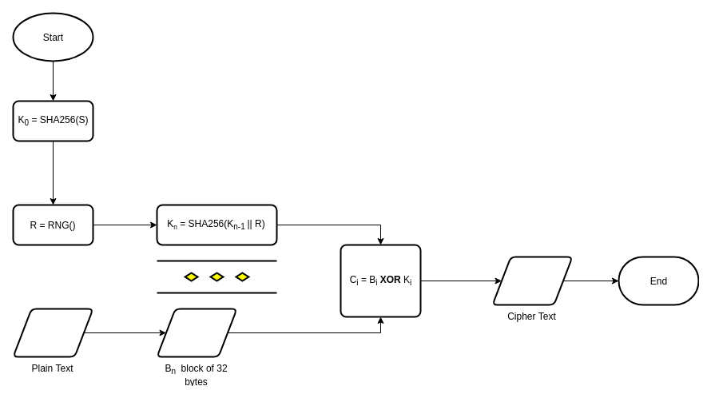

Programming with libpcap
libpcap is a good library to capture network traffic, It's fun to programing with libpcap you could do some experiment or deal with lower layer of OSI model. I'm go back to programing with libpcap in the challenge of capture TCP traffic.
Install development environment
I'm using Fedora 29 and have no idea about your Operating System then some might not work.
$ sudo dnf install gcc make cmake libpcap-devel
libpcap-devel is required, of course.
Write first program to listing all device
It's some kind of Hello World! with libpcap.
#include <stdio.h>
#include <pcap.h>
int main()
{
pcap_if_t *alldevs;
pcap_if_t *d;
int i = 0;
char errbuf[PCAP_ERRBUF_SIZE];
/* Retrieve the device list from the local machine */
if (pcap_findalldevs(&alldevs, errbuf) == -1)
{
fprintf(stderr, "Error in pcap_findalldevs: %s\n", errbuf);
return 0;
}
/* Print the list */
for (d = alldevs; d != NULL; d = d->next)
{
printf("%d. %s", ++i, d->name);
if (d->description)
printf(" (%s)\n", d->description);
else
printf(" (No description available)\n");
}
if (i == 0)
{
printf("\nNo interfaces found! Make sure libPcap is installed.\n");
return 1;
}
/* Free device list */
pcap_freealldevs(alldevs);
}
Compile and run
It's the same to complie Hello World! but you need to add -lpcap to link libpcap to your program.
gcc ./src/list_devices.c -o ./list_devices -lpcap && ./list_devices
Result:
1. enp3s0 (No description available)
2. lo (No description available)
3. any (Pseudo-device that captures on all interfaces)
4. virbr0 (No description available)
5. bluetooth-monitor (Bluetooth Linux Monitor)
6. nflog (Linux netfilter log (NFLOG) interface)
7. nfqueue (Linux netfilter queue (NFQUEUE) interface)
8. bluetooth0 (Bluetooth adapter number 0)
9. usbmon0 (All USB buses)
10. wlo1 (No description available)
11. usbmon1 (USB bus number 1)
12. usbmon2 (USB bus number 2)
13. virbr0-nic (No description available)
Credits
Thanks to these guys,
I++ and I-- which is faster with array operator?
My friend gave me a link on Youtube why i-- for loop is faster than i++ with arrays in JavaScript. The guy who was create this video is some kind of dumb ass. He's not event know how does Node.JS or Javascript work.
Let repeat his experiment
I wrote a simple code with i++ then append i in to an Array:
let a = [];
let s = Date.now()
for (let i = 0; i < 10000000; i++) {
a.push(i);
}
console.log('I++ cost:', Date.now() - s, 'μs');
Result:
I++ cost: 175 μs
Let try the same with i--:
let b = [];
let c = Date.now()
for (let i = 10000000; i > 0; i--) {
b.push(i);
}
console.log('I-- cost:', Date.now() - c, 'μs');
Result:
I-- cost: 175 μs
Wow, it's the same, why the hell it happened?.
Let repeat the dumb ass experiment
let b = [];
let c = Date.now()
for (let i = 10000000; i > 0; i--) {
b.push(i);
}
console.log('I-- cost:', Date.now() - c, 'μs');
let a = [];
let s = Date.now()
for (let i = 0; i < 10000000; i++) {
a.push(i);
}
console.log('I++ cost:', Date.now() - s, 'μs');
Result:
I-- cost: 197 μs
I++ cost: 202 μs
The result shown, I-- quite faster than I++ when I let it on the top then let do in reverse.
let a = [];
let s = Date.now()
for (let i = 0; i < 10000000; i++) {
a.push(i);
}
console.log('I++ cost:', Date.now() - s, 'μs');
let b = [];
let c = Date.now()
for (let i = 10000000; i > 0; i--) {
b.push(i);
}
console.log('I-- cost:', Date.now() - c, 'μs');
Result:
I++ cost: 195 μs
I-- cost: 205 μs
Oh! see, V8 Engine have some kind pre-processing for initial code on the top. That's why this dumb ass orbserve and do stupid experiment.
Onward in XOR cipher
A long time ago, I had readed this article Unbreakable Cryptography in 5 Minutes. I've realized XOR Cipher is secure as long as key length equal or greater than data length. It's sound stupid where data is fucking big but what if we could generate the key deterministically?.
Hash function
Hash function is some kind of deterministic algorithm, it's always giving the same result for the same input. And you could repeating hash function on the result of itself to get new digest, it won't repeat by sequence.
Proposing a method to generate infinity key length

Implementation
Run go Ethereum inside a container with non-root user
I do serveral experiments on Ethereum blockchain it's really fun to play around. Sometime, you want to have a few decentralized features then you supposed to run your own node instead of Infura endpoint. This article is also a experiment to have fun with Ethereum and docker container.
Docker compose
docker-compose.yml is quite familiar to start a docker project.
version: "3.7"
services:
geth:
image: my-geth:latest
build:
context: .
dockerfile: Dockerfile
user: "smart-ass"
volumes:
- ./data/:/home/smart-ass/data/:rw
In this configuration, I'm going to map my current directory ./data/ into /home/smart-ass/data, just want to make sure I won't lost my synchronization even I start a new container.
Writing a script to start docker-compose
This script will create a user named smart-ass belong to smart-ass group and passed arguments from host to the container.
#!/usr/bin/env sh
PARENT_USER=smart-ass
PARENT_UID=1988
PARENT_GROUP=smart-ass
PARENT_GID=1988
# Creating smart ass user and group
getent group smart-ass
if [ $? -eq 2 ]; then
sudo groupadd -g 1988 smart-ass
sudo useradd -M -g smart-ass -u 1988 smart-ass
fi
# Create folder if not existed
if [ ! -d "./data/" ]; then
sudo mkdir ./data/
fi
# Changing owner ship of data folder
sudo chown ${PARENT_USER}:${PARENT_GROUP} -R ./data/
sudo chmod 755 -R ./data/
# Start docker build with argument
sudo docker-compose build \
--build-arg PARENT_USER=${PARENT_USER} \
--build-arg PARENT_UID=${PARENT_UID} \
--build-arg PARENT_GROUP=${PARENT_GROUP} \
--build-arg PARENT_GID=${PARENT_GID}
User's id and group's id were specified as a unique number 1988. Let's take a look inside Dockerfile
Dockerfile
Alpine Linux is good choice to begin with, geth is also supported by default that's make my job easier.
FROM alpine:latest
# Consumed agurments from host machine
ARG PARENT_USER
ARG PARENT_UID
ARG PARENT_GROUP
ARG PARENT_GID
# Define home folder
ENV HOME=/home/${PARENT_USER}
# Install geth
# Add `smart-ass` group
# Add `smart-ass` user
# UID and GID is the same to host machine, we just want to make sure host's data is accessible to container's user
RUN apk add geth \
&& addgroup -g ${PARENT_GID} ${PARENT_GROUP} \
&& adduser -D -u ${PARENT_UID} -G ${PARENT_GROUP} -h ${HOME} ${PARENT_USER}
WORKDIR ${HOME}
COPY ./docker-script.sh ./docker-script.sh
RUN chown ${PARENT_USER}:${PARENT_USER} ./docker-script.sh \
&& chmod a+x ./docker-script.sh
USER ${PARENT_USER}
# Is required to discover ethereum nodes
EXPOSE 30303/tcp 30303/udp
CMD ["./docker-script.sh"]
The golden rule is, "don't run with root privilege".
Startup command
I want to run serveral commands during container boot up so I created ./docker-script.sh:
#!/usr/bin/env sh
container_info=`id`
echo "Container info: ${container_info}"
echo "Test write to data folder:"
ls -la ${HOME}/data/
date > ${HOME}/data/test-write.txt
cat ${HOME}/data/test-write.txt
geth --datadir ${HOME}/data --rinkeby --syncmode "light"
Rundocker without docker-compose
docker run -v $(pwd)/data/:/home/smart-ass/data -ti --rm my-geth:latest
Conclusion
- The golden rule is, "don't run with root privilege".
- Docker container was started with non-root user
./data/geth.ipcwas accessible from inside and outside of docker container.- IPCProvider is providing impresive performance
- You could run with current user by changing these lines:
PARENT_USER=$(id -u)
PARENT_UID=$(id -nu ${PARENT_USER})
PARENT_GROUP=$(id -ng ${PARENT_USER})
PARENT_GID=$(id -g ${PARENT_USER})
Xorshift based pseudo random
This paper Xorshift RNGs, July 2003, Marsaglia, George was inspired me to create another kind of Xorshift based without static initial.
The basic concept is:
- Seeding with a initial value
seed - Repeat caculation for every bit of
seed iis denoted for biti th- Read
shift flagby take less significant bitRSHIFT(seed, i) AND 1 - If
shift flagequal to0:result = result ^ RSHIFT(seed, i) - If
shift flagequal to1:result = result ^ LSHIFT(seed, i)
Implementation
Implement in Python
import random
seed = random.randint(0x55555555, 0xffffffff)
def rnd():
global seed
x = 0
for i in range(32):
if (seed >> i) & 1:
x ^= seed >> i
else:
x ^= seed << i
x = 0xffffffff & x
seed = x
return x
for i in range(1000):
print rnd()
Implement in JavaScript:
const crypto = require('crypto');
//Generate seed randomBytes
var seed = crypto.randomBytes(4).readUInt32LE(0);
//XorShift based PRNG
function rnd(){
var x = 0, i;
for(i = 0; i < 32; i++){
//Shift right if [i th] bit is equal to 1, otherwise shift letf
x ^= ((seed >> i) & 1) ? seed >> i : seed << i;
}
return seed = x >>> 0;
}
for(let i = 0; i < 1000; i++){
process.stdout.write(`${i}\n`)
}
Implement in C
#include <stdio.h>
#include <time.h>
unsigned int seed;
unsigned int rnd(){
unsigned int x = 0, i;
for(i = 0; i < 32; i++){
x ^= ((seed >> i) & 1) ? seed >> i : seed << i;
}
return seed = x;
}
int main(){
time_t tsec;
int i = 0;
tsec = time(NULL);
seed = (unsigned int)tsec;
for(;i < 1000; i++) printf("%u\n", rnd());
return 0;
}
Test:
gcc test.c -o test && chmod a+x test && ./test
Conclusion
0x00000000and other kind of poor entropy seed are the worst thing to this algorithm- The result is predictable within disclosed
seed - We need some kind of
fallback modefor low entropy seed - It isn't safe for cryptography purpose
Capture TCP Traffic
Before you read this article, Programing with pcap.
Dump binary data
I wrote some methods to help me observer the result form memory, all these thing better to print in friendly hexadecimal.
00000000: 8A 17 03 03 00 5D 00 00 00 00 00 00 00 BD 2E 02 .....]..........
00000020: 94 FE 87 9F 2B 5E 57 F9 5E 95 F9 76 3F 2C 02 A0 ....+^W.^..v?,..
00000040: 66 66 38 3E 03 B5 FD 2C BB 6C 9F 87 39 30 3A B4 ff8>...,.l..90:.
00000060: A4 E5 82 80 BF 02 97 C6 2C C6 52 1B 20 3A F7 C9 ........,.R. :..
00000080: 47 A0 A6 E4 B4 FA 62 40 3A B6 32 1E DB 7B 12 CC G.....b@:.2..{..
000000A0: A6 34 1C 92 67 C3 4D 7E 5E 87 79 AE 37 50 E8 A1 .4..g.M~^.y.7P..
000000C0: 08 62 .b
It's pretty cool, right?
Methods to print binary like above
#include <stdio.h>
#include <stdlib.h>
#include <pcap.h>
#include <string.h>
#include <time.h>
#include <netinet/in.h>
#include <netinet/if_ether.h>
#define LENGTH_BUFFER 255
#define LENGTH_HEX 62
#define LENGTH_CHAR 16
#define LENGTH_ADDRESS 8
#define u_char unsigned char
//Padding characters
char *repeat(char ch, size_t times)
{
char *str = (char *)malloc(times + 1);
memset(str, ch, times);
str[times] = 0x00;
return str;
}
//Render address
char *address(size_t s)
{
char buffer[LENGTH_ADDRESS + 1];
sprintf(buffer, "%X", s);
char *tmpPadding = repeat('0', LENGTH_ADDRESS - strlen(buffer));
strcat(tmpPadding, buffer);
return tmpPadding;
}
//Binary print
void brintf(void *data, size_t offset, size_t len)
{
int i = 0;
size_t s = 0;
char *dataPointer = (char *)(data + offset);
char buffer[LENGTH_BUFFER];
char charBuffer[LENGTH_BUFFER];
char hexBuffer[3];
unsigned char tmp;
//Print address to buffer
{
char *strAddress = address(s);
sprintf(buffer, "%s: ", strAddress);
free(strAddress);
}
//Clearn character buffer
memset(charBuffer, 0x00, LENGTH_BUFFER);
for (int c = 0; c < len; c++)
{
// AND with 0xff to make sure we have pure char
tmp = 0xff & dataPointer[c];
sprintf(hexBuffer, "%X", tmp);
//Only show printable
charBuffer[i++] = (tmp >= 32 && tmp <= 126) ? tmp : '.';
if (strlen(hexBuffer) == 1)
{
hexBuffer[1] = hexBuffer[0];
hexBuffer[0] = '0';
}
strcat(buffer, " ");
if ((i - 1) % 4 == 0)
{
strcat(buffer, " ");
}
strcat(buffer, hexBuffer);
size_t bl = strlen(buffer);
if (bl >= LENGTH_HEX || c == len - 1)
{
i = 0;
s += 32;
if (bl < LENGTH_HEX)
{
char *tmpBuffer = repeat(' ', LENGTH_HEX - bl);
strcat(buffer, tmpBuffer);
free(tmpBuffer);
}
printf("%s %s\n", buffer, charBuffer);
{
char *strAddress = address(s);
sprintf(buffer, "%s: ", strAddress);
free(strAddress);
}
memset(charBuffer, 0x00, LENGTH_BUFFER);
}
}
}
brintf takes three argurments:
void brintf(void *data, size_t offset, size_t len);
data: data pointeroffset: offset of beginning of datalen: data size
Write capture code:
void packet_handler(
u_char *args,
const struct pcap_pkthdr *header,
const u_char *packet);
int main(int argc, char *argv[])
{
char *device;
pcap_if_t *alldevs;
char error_buffer[PCAP_ERRBUF_SIZE];
pcap_t *handle;
struct bpf_program fp; // The compiled filter
char filter_exp[] = "tcp"; // The filter expression, apply to all TCP
bpf_u_int32 mask; // Our netmask
bpf_u_int32 net; // Our IP
int timeout_limit = 10000; // In milliseconds
// Retrieve the device list from the local machine
if (pcap_findalldevs(&alldevs, error_buffer) == -1)
{
fprintf(stderr, "Error in pcap_findalldevs: %s\n", error_buffer);
return 1;
}
if (alldevs == NULL)
{
fprintf(stderr, "No device found: %s\n", error_buffer);
return 2;
}
//Seet device as first device found
device = alldevs->name;
// Find the properties for the device
if (pcap_lookupnet(device, &net, &mask, error_buffer) == -1)
{
fprintf(stderr, "Couldn't get netmask for device %s: %s\n", device, error_buffer);
net = 0;
mask = 0;
}
// Open device for live capture
handle = pcap_open_live(
device,
BUFSIZ,
0,
timeout_limit,
error_buffer);
if (handle == NULL)
{
fprintf(stderr, "Could not open device %s: %s\n", device, error_buffer);
return 3;
}
// Compile and apply the filter
if (pcap_compile(handle, &fp, filter_exp, 0, net) == -1)
{
fprintf(stderr, "Couldn't parse filter %s: %s\n", filter_exp, pcap_geterr(handle));
return 4;
}
// Set filter
if (pcap_setfilter(handle, &fp) == -1)
{
fprintf(stderr, "Couldn't install filter %s: %s\n", filter_exp, pcap_geterr(handle));
return 5;
}
pcap_loop(handle, 0, packet_handler, NULL);
return 0;
}
void packet_handler(
u_char *args,
const struct pcap_pkthdr *packet_header,
const u_char *packet_body)
{
//Make sure it's TCP/IP
if (packet_header->len > 66)
{
printf("\n");
//Print TCP payload
brintf((void *)packet_body, 65, packet_header->len - 66);
}
return;
}
Compile and execute:
gcc ./main.c -lpcap -o ./main && sudo ./main
Result:
00000000: 50 66 4C F0 3A C5 EB C9 57 55 3E 63 07 3D 6A 9F PfL.:...WU>c.=j.
00000020: A1 0B E0 31 F8 4D 43 D3 ED 5B F7 A7 4B 81 8E 5D ...1.MC..[..K..]
00000040: 58 95 7D 91 24 AF 1B 57 CD 3E 50 5B 48 9B BF 77 X.}.$..W.>P[H..w
00000060: E3 EA 9F 1E 49 01 3F 54 25 1B F8 F1 15 62 10 C5 ....I.?T%....b..
00000080: D9 61 F0 1F 2B A2 58 E2 AC B8 69 E2 1B E2 08 CF .a..+.X...i.....
000000A0: BB 08 E8 6D 82 5F 6D F6 2B 5E 98 1D D3 65 66 10 ...m._m.+^...ef.
000000C0: D4 65 DD B5 36 14 25 23 1F 84 27 A5 8B 3A 39 AF .e..6.%#..'..:9.
000000E0: 94 47 71 F6 73 EC B2 D7 5C CB 16 A7 07 AA 02 39 .Gq.s...\......9
00000100: 48 04 38 FD E5 C4 22 B9 CA E5 FB D3 DA 8E A3 97 H.8...".........
00000120: 10 6A 7B 16 81 F3 54 C5 43 CF 72 A6 EC F2 7A 12 .j{...T.C.r...z.
00000140: D1 14 23 9B DC 5B 80 AA 62 01 1A CD 03 B3 CB F8 ..#..[..b.......
00000160: 2E BB 78 82 38 88 DD 9B 8A 18 21 D0 6E 53 9D 78 ..x.8.....!.nS.x
00000180: 91 8F A0 D8 76 ED D4 6E 4B 53 E4 58 09 74 1D 9A ....v..nKS.X.t..
000001A0: 3A 0B F0 EF E5 76 CD AF :....v..
00000000: 56 17 03 03 01 36 00 00 00 00 00 00 00 01 5B F2 V....6........[.
00000020: 6B 16 E8 56 CB C5 59 73 54 41 5F 17 93 00 0C BF k..V..YsTA_.....
00000040: 72 83 DB 5F 7C CE DF F0 C8 C8 7D 2F 22 9B 43 77 r.._|.....}/".Cw
00000060: 74 AE A2 77 7D B2 B7 03 AE 63 62 7A 63 27 9B 69 t..w}....cbzc'.i
00000080: 15 FB 69 95 97 76 CC 98 4B 7F 8E FC B5 46 ED 9A ..i..v..K....F..
000000A0: 59 88 65 29 7D D7 F7 4D C2 0E D2 B3 D4 3B 70 BF Y.e)}..M.....;p.
000000C0: AB 6B 33 82 70 A1 3E 53 CF 48 2D EE 47 E6 D4 D6 .k3.p.>S.H-.G...
000000E0: E4 D2 26 07 F4 E0 82 A7 AE 96 2F 6F A8 E0 CE C3 ..&......./o....
00000100: C7 74 3B C1 27 8A A1 00 22 58 11 05 1E 6B 07 A7 .t;.'..."X...k..
00000120: 0E 63 D6 AC C4 E0 66 F0 88 48 FD 1D 63 8D 11 80 .c....f..H..c...
00000140: 00 5F 9D 9E 03 A1 98 A1 E8 BF 81 5F 54 1B 10 04 ._........._T...
00000160: 08 2B FA ED 7D 10 A7 64 F3 E3 EC 64 C3 BE 69 E8 .+..}..d...d..i.
00000180: 6F 98 81 A5 39 86 A4 C9 FE 21 45 73 0A 46 17 51 o...9....!Es.F.Q
000001A0: EA AC 10 4A 09 CD 8E DD 7F DF AF BE C3 1F AA 9A ...J............
000001C0: EE 63 C2 3F 0F 43 FA 5A 53 F4 EA D1 7E 8A 6D 0B .c.?.C.ZS...~.m.
000001E0: 11 C8 A6 FC F1 F6 BC 95 05 2C 3C 25 27 22 CD 27 .........,<%'".'
00000200: F9 82 99 70 3E 00 86 80 1F 24 B4 63 E9 CF 93 30 ...p>....$.c...0
00000220: 1A 60 5A 94 B3 83 22 EB F3 60 98 24 54 8F FB 94 .`Z..."..`.$T...
00000240: 3E 00 DB 0E 85 B4 3F 56 55 34 2C C1 44 DD E8 9E >.....?VU4,.D...
00000260: 09 A1 5C DB BD 24 EF 9E 0C ED 4B ..\..$....K